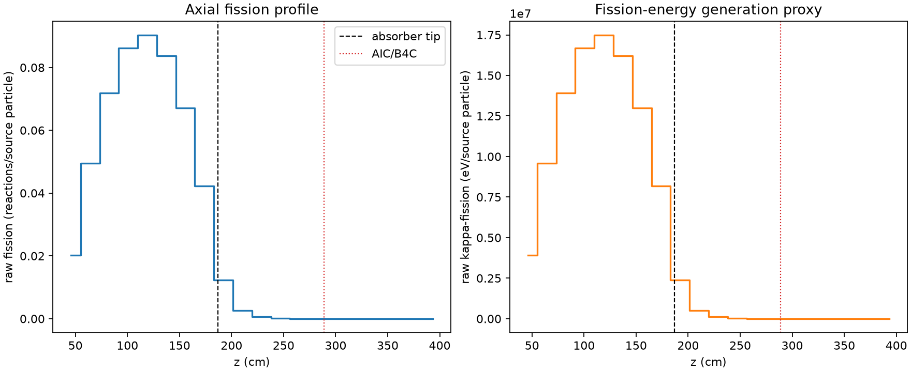
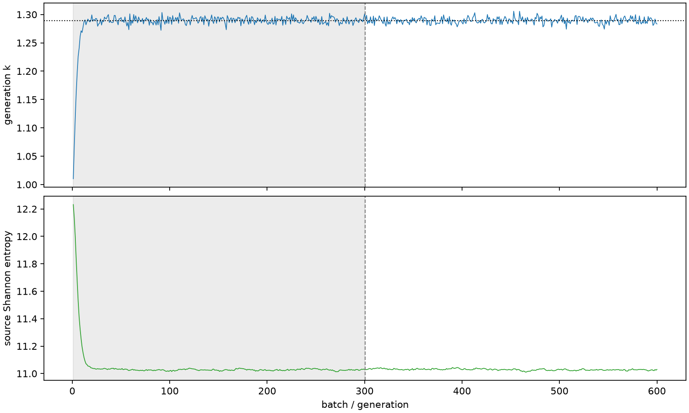

| field | value |
|---|---|
| experiment | V2-STAGE_32_OGRENCI_04-0007 |
| k | 1.289138924249542 |
| MC standard error | 0.00017952215900078375 |
| seconds | 1367.320134955 |
| acceptance | not_assessed |
| convergence | review_required |
Completed is output integrity only; physical and statistical review required. Zero tallies do not prove zero production or zero uncertainty.
| diagnostic | value |
|---|---|
| geometric fuel voxels | 5280 |
| zero fission tally voxels | 1183 |
| low signal fuel voxels | 2107 |
| low signal fission share | 8.68302410686771e-05 |
| low signal kappa share | 8.686367628385717e-05 |
| important fission share | 0.9501400190597882 |
| previous filter included | 3173 |
| duration estimate s | 1562.5173488400023 |
| actual minus estimate s | -195.19721388500238 |
| fission relative MC error | statistics |
|---|---|
| all_geometric_fuel | {"voxels": 5280, "positive_mean_voxels": 4097, "zero_mean_voxels": 1183, "undefined_relative_error_voxels": 1183, "median": 0.012805502613171572, "p95": 0.8388528886888669, "maximum": 1.0000000000000002} |
| low_signal | {"voxels": 2107, "positive_mean_voxels": 924, "zero_mean_voxels": 1183, "undefined_relative_error_voxels": 1183, "median": 0.5266959202861401, "p95": 1.0, "maximum": 1.0000000000000002} |
| important_95pct | {"voxels": 1971, "positive_mean_voxels": 1971, "zero_mean_voxels": 0, "undefined_relative_error_voxels": 0, "median": 0.006603409058298908, "p95": 0.011532868457554756, "maximum": 0.013110851244332675} |
| outside_previous_filter | {"voxels": 2107, "positive_mean_voxels": 924, "zero_mean_voxels": 1183, "undefined_relative_error_voxels": 1183, "median": 0.5266959202861401, "p95": 1.0, "maximum": 1.0000000000000002} |
| kappa_fission relative MC error | statistics |
|---|---|
| all_geometric_fuel | {"voxels": 5280, "positive_mean_voxels": 4097, "zero_mean_voxels": 1183, "undefined_relative_error_voxels": 1183, "median": 0.012790687608809451, "p95": 0.8367517888297579, "maximum": 1.0000000000000002} |
| low_signal | {"voxels": 2107, "positive_mean_voxels": 924, "zero_mean_voxels": 1183, "undefined_relative_error_voxels": 1183, "median": 0.52516110097296, "p95": 1.0, "maximum": 1.0000000000000002} |
| important_95pct | {"voxels": 1971, "positive_mean_voxels": 1971, "zero_mean_voxels": 0, "undefined_relative_error_voxels": 0, "median": 0.006596491656481199, "p95": 0.011520964984518576, "maximum": 0.013096958314577503} |
| outside_previous_filter | {"voxels": 2107, "positive_mean_voxels": 924, "zero_mean_voxels": 1183, "undefined_relative_error_voxels": 1183, "median": 0.52516110097296, "p95": 1.0, "maximum": 1.0000000000000002} |
| axial bin | fission share | kappa-fission share |
|---|---|---|
| 1 | 0.038370943229009725 | 0.038372240649515284 |
| 2 | 0.0938848053072936 | 0.09388399504842337 |
| 3 | 0.136411500366471 | 0.13641026778658988 |
| 4 | 0.1635263385392066 | 0.16352487167762814 |
| 5 | 0.17131684546102183 | 0.17131567045049015 |
| 6 | 0.15884455270808356 | 0.15884330908086544 |
| 7 | 0.1275148248485519 | 0.12751370905416742 |
| 8 | 0.08024035708342611 | 0.08023958349990588 |
| 9 | 0.023442075085925648 | 0.023446419651516767 |
| 10 | 0.004898017550936391 | 0.004899672180229123 |
| 11 | 0.0011793844339478647 | 0.0011797729010070757 |
| 12 | 0.0002831165777263079 | 0.0002832148539003987 |
| 13 | 6.96197607094453e-05 | 6.964591101793378e-05 |
| 14 | 1.4782488039940319e-05 | 1.4788518716330797e-05 |
| 15 | 2.31277978979096e-06 | 2.314496203552668e-06 |
| 16 | 5.175573310207615e-07 | 5.180243155672887e-07 |
| 17 | 6.222529406357396e-09 | 6.215507540772196e-09 |
| 18 | 0.0 | 0.0 |
| 19 | 0.0 | 0.0 |
| 20 | 0.0 | 0.0 |
Histories include the inactive-to-active transition at batch 300. kappa-fission approximates fission energy production, not total heat deposition.

